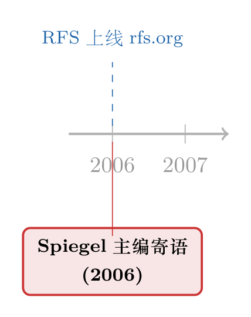

当一封信有了 DOI：读 RFS 主编上任一年的「年终报告」
本文读的是 Spiegel (2006, Review of Financial Studies)：这不是一篇论文，而是 RFS 执行主编 Matthew Spiegel 上任满一年时写给读者的一页公开信——它没有数据、没有模型、没有假设检验，却被印在第 19 卷第 2 期第 357 页上，挂着自己的 DOI（10.1093/rfs/hhj037）。它之所以值得一读，恰恰因为它什么都没「研究」，却替我们打开了学术金融这台机器的后台。
1 引言：一篇你下载下来才发现「不对劲」的文章
设想这样一个场景。你在数据库里检索某个题目，看到一条 Review of Financial Studies、2006、Vol. 19, No. 2 的记录，干净利落地排在两篇正经论文中间。你照例点了下载，PDF 加载出来——页眉是熟悉的 RFS 版式，右下角盖着 Downloaded from https://academic.oup.com/rfs/...，连「Norges Handelshøyskole user on 09 May 2026」这样的机构下载水印都一应俱全。一切都告诉你：这是一篇正式发表的学术文献。
然后你开始读正文。
Dear Readers: When this issue comes out it will have been one year since I took on the role of Executive Editor……
没有摘要，没有引言，没有「we show that」。这是一封信。一封主编写给读者的、不到三百个英文单词的信。它的署名是「Sincerely, Matthew Spiegel, Executive Editor」。
这就产生了本文要反复咀嚼的那个张力：一封信，凭什么也能拥有卷号、页码和 DOI？ 一份在学术评价体系里「可被引用」的对象，却完全不包含任何可被检验、可被复制、可被证伪的内容。我们习惯于审视一篇论文的识别策略与稳健性，可当对象本身根本不是论文时，「读」这个动作还剩下什么？
先把丑话说在前面：按通常意义上的「论文评述」，这篇东西无可评述。它没有研究问题，没有 双重差分 (difference-in-differences, DiD)，没有 工具变量 (instrumental variable, IV)，没有一张表、一个系数、一个 t 值。所以本文不会假装去「解读」一个不存在的实证设计；它要做的，是把这页纸当成一份关于学术出版体制的一手史料来读。
2 这封信到底说了什么
剥开形式，信的实质内容只有三件事，简短到可以逐条列出。
首先，是一份「数字化」的进度汇报。 Spiegel 说，过去这一年里，期刊「continued its trek into the internet age」——第一次有了能在线接收投稿和缴费的网页，第一次在 Oxford Journals 提供的页面之外，拥有了自己专属的网站 http://www.rfs.org。他还顺手做了广告：在那里你不仅能投稿、能上传审稿意见，还能参与期刊的「discussion forum」。
读到这里要稍微停一下。2006 年，一份顶级金融期刊在它的正式刊面上郑重宣布「我们终于能在线投稿了」——这本身就是一帧值得保存的截图。今天的我们觉得在线投稿系统天经地义，可这封信精确地标注了那条分界线：在它之前，稿件与审稿意见在很大程度上还得靠纸与邮局流转。
接着，一个自然的过渡是「人事」。 Spiegel 感谢三位本年度卸任的副主编（editorial posts）：Yacine Aït-Sahalia、Robert McDonald、和 Terrance Odean。这三个名字，随便拎一个出来都是金融学里响当当的人物——连续时间计量、衍生品定价、行为金融，恰好各占一方。这句感谢顺带泄露了一个外人不常意识到的事实：顶刊的编辑岗位，是由这些本该忙于自己研究的顶尖学者轮值的。
然后，是这封信里唯一带点温度的一段。 紧接着,Spiegel 写下了一句几乎是从牙缝里挤出来的真心话：
Editing the journal is a job that never ends. There are no vacations since papers and referee reports arrive every single day. A week off just means you get to do two weeks of work upon your return.
主编这份工作没有尽头，因为稿件和审稿报告每一天都在来；休假一周，只意味着回来要干两周的活。这是全信中唯一不像「公告」的句子——它把编辑这门隐形劳动的真实质地，毫不修饰地端了出来。
但真正关键的一步，落在最后一句。 Spiegel 把最重的感激给了他的前任 Maureen O'Hara：「Every editor hopes to accomplish as much as she did during her tenure.」——每一位主编都希望能做到她任内所做的那么多。一封原本平铺直叙的行政公告，到这里突然有了交接棒的分量：一个时代的结束，与另一个时代小心翼翼的开始。
于是反转出现：这页看似最无信息量的纸，其实信息密度并不低——它只是把信息装在了「制度」而非「数据」这个容器里。
3 为什么一封信会被「发表」
那个最初的疑问还悬在那儿：它凭什么有 DOI？
答案藏在 DOI 这套体系的设计哲学里。数字对象标识符（Digital Object Identifier, DOI）的初衷，是给任何需要被稳定、永久引用的数字对象一个不会失效的地址——它从不区分这个对象是石破天惊的实证发现，还是主编的三百字寒暄。期刊把刊面上印出来的每一样东西（社论、勘误、讣告、致谢、乃至这种年终汇报）都一视同仁地编号、编页、注册 DOI，是为了让整本刊物在档案意义上完整且可追溯。
换句话说，DOI 标记的不是「学术价值」，而是「这件东西确实曾以这种形态、出现在这一卷这一页上」。它是出版的指纹，不是质量的勋章。这页信之所以看起来像论文，只是因为它穿了和论文同一套档案制度的外衣。
这也解释了为什么文献数据库会把它和正经论文排在一起：在元数据的世界里，它们的「身份证」格式完全相同。区分内容的责任，被悄悄地从数据库转移给了读者本人。
这条线索，本博客其实追过好几回。期刊给每篇文章发「身份证」、用 DOI 替代页码的那场静悄悄的变革，可参见《页码消失的那一天：JFE 给每篇文章发了一个「身份证」》；而主编亲自下场写公开信去裁定一桩学术优先权纠纷的另一种「非论文论文」，可参见《谁先到的？——一桩 JFE 学术优先权争议的「结案陈词」》。把这几页放在一起读，你会发现金融顶刊的刊面上，始终留着一小块不做研究、只做治理的空间。
4 文献脉络：一份没有「文献」的文献
现在轮到本文最尴尬、也最诚实的一节。
通常在这里，我会替你把一条研究脉络从早期工作捋到关键论文再落到本文的位置。可这封信里一篇参考文献都没有——它不引用任何人，因为它本就不打算论证任何东西。它在引文网络（citation graph）里是一个孤立的点，既不站在谁的肩膀上，也大概率不会有谁站到它的肩膀上。
所以这一节，我们只能换一种「脉络」来谈：不是思想的脉络，而是体裁的脉络。金融顶刊的刊面上，历来共存着两类文本——一类是绝大多数的研究论文，另一类则是数量稀少、却记录着学术共同体自身运转的「元文本」(meta-text)：主编的话、出版商说明、勘误与撤稿、对逝者的纪念。它们共享同一套排版、页码与 DOI 制度，却服务于完全不同的功能。本文，正是这条「元文本」支流上极朴素的一滴水。

必须坦白：由于全信中真正出现的年份只有 2006 一个，下方时间线无法像研究综述那样铺陈五六个里程碑——硬塞任何别的年份都是编造。所以它只忠实地标出这一个坐标：2006 年，RFS 一边把投稿搬上 rfs.org，一边在刊面上为这次数字化与人事交接留下了这页存照。
如果一定要给它在思想史上找个邻居，那也不是某篇论文，而是金融学界为重要人物所写的那些纪念与致敬文字——它们同样不带数据，却同样被正式发表、被永久编号。这一脉的代表，可参见《送别迈克尔·詹森：一个相信市场、却毕生研究市场失灵的人》与《用引用数丈量一生：詹森留给金融学的几堂课》。它们和这封信一样提醒我们：一份期刊不只是论文的容器，它也是一个有记忆、有人情、会交接班的共同体。
5 评论与延伸（Q&A + 研究方向）
(a) 几个可能的疑问
Q：把这种「非论文」也当成一篇文献来评述，是不是小题大做？
从「解读研究」的角度看，确实无题可做——它没有研究。但从「理解学术体制」的角度看，它是一份难得的一手凭证：它精确地把一份顶刊「上网」的那一年，连同当时的主编与卸任的副主编名单，钉死在了刊面上。研究者读论文，也应该偶尔读一读论文得以诞生的那台机器。
Q：它和「社论 (editorial)」是一回事吗？
不完全是。学术社论通常会就某个方法论或行业议题表达观点、甚至引发争论。这封信几乎不表达任何学术立场——它是一份行政性的年终汇报加致谢，更接近机构通讯而非观点文章。它的价值在记录，不在论证。
Q：「每一天都有稿件和审稿意见涌进来」这句牢骚，有没有研究意义？
有，而且不小。它点出了同行评审体系最核心的稀缺资源——顶尖学者的注意力与时间。主编与审稿人是一种几乎不计报酬的隐形劳动，整个学术质量控制体系就架在这份劳动的可持续性上。这句随口的抱怨，其实是在描述一个真实的拥塞 (congestion) 问题。
Q：在线投稿系统的上线，只是个技术细节吗？
不止。投稿与审稿流程的数字化，会实实在在地改变投稿成本、审稿周期、乃至谁更容易被「看见」。把纸质流程换成电子流程，等于给整个发表市场换了一套摩擦结构——这恰恰是可以做因果评估的。
2006这条信，正好替我们标出了 RFS 这道政策变化的生效时点。
Q：为什么是 O'Hara 被如此郑重地致谢？
信里没有展开，我们也不该替它编造细节。能确证的只有文本本身：Spiegel 把全信分量最重的一句给了前任，说「每位主编都希望能做到她任内那么多」。这是一句交接棒式的敬意，至于她具体做了什么，超出了这页纸所提供的证据，本文不臆测。
Q：那作为读者，我到底该从这页纸里「拿走」什么？
一个清醒的认识：文献数据库里「看起来一样」的两条记录，内容可以天差地别。DOI 保证的是可追溯，不是可信赖或有发现。判断一份文献值不值得读、能不能引，永远是读者自己的责任，而不是元数据替你完成的判断。
(b) 几个可能的研究问题与提案
1）在线投稿系统上线的因果效应
- 【经济故事】
2006年 RFS 上线在线投稿与缴费系统，是一次清晰的流程冲击。它可能缩短审稿周期、改变投稿构成（比如让海外、非英语母语作者更容易投递），也可能因为投稿成本下降而抬高了 desk-reject 率。 - 【可行性】中。不同顶刊数字化的时点并不同步，天然构成一个交错处理的设定，可用 双重差分 (DiD) 比较「已上线 vs. 未上线」期刊的周期与录用结构变化。难点在于干净地收集各刊系统上线的确切日期，以及控制同期其他改革；好在像这封信这样的刊面公告，恰好是这些时点的可靠史料来源。
2）编辑与审稿这门「隐形劳动」的拥塞经济学
- 【经济故事】Spiegel 那句「休假一周等于回来干两周」，说的是一个排队系统：稿件以近似泊松的速率到达，而高质量审稿人的处理能力近乎固定。当到达率持续高于处理率，周期就会系统性地拉长——这是一个可以建模、也可以实证的拥塞问题。
- 【可行性】中。理论侧可借排队论与机制设计刻画「审稿人时间」这一公共品的最优配置；实证侧若能拿到某刊的投稿—决策时间戳面板，便可估计到达强度对周期的弹性。数据获取是主要门槛。
3）期刊「元文本」的文本分析
- 【经济故事】把几十年、几十本顶刊的主编寄语、出版说明、勘误、纪念文一网打尽，做一次大规模文本分析，能勾勒出整个学科自我治理与自我叙述的变迁：哪些年在谈数字化，哪些年在谈伦理与可复制性，哪些年在送别谁。
- 【可行性】高。这类元文本都带 DOI、公开可得，体量不大、版式规整，非常适合做主题建模与时间趋势分析。它产出的是一部「金融学术圈的自传」，独立成文绰绰有余。
4）DOI / 元数据与「可引用性」错觉
- 【经济故事】当一封信和一篇实证论文拥有格式完全相同的「身份证」时，自动化的引文统计、AI 文献综述工具会不会把这类零内容条目也计入、从而污染计量指标？这关系到我们用引用数评价学术影响力时的系统性噪声。
- 【可行性】中。可在大型引文数据库里识别出社论/致谢/勘误这类「非研究」条目，统计它们被引、被自动综述工具纳入的频率，量化这层「可引用性错觉」的规模。识别非研究条目的分类器是主要技术活。
6 我的判断
老实说，把这页纸称作「论文」，本身就是元数据制度开的一个善意玩笑。它没有贡献可言——如果「贡献」指的是对某个学术问题的推进。它也谈不上「识别担忧」——因为它根本没有要识别的因果。任何假装从中读出实证设计的评述，都是在无中生有。
但它确有它的价值，只是这价值不属于「研究」，而属于「史料」：它用一页纸钉住了 2006 年 RFS 从纸面走向网络的那一刻，记下了三位卸任副主编的名字，留下了一句关于编辑劳动的真心牢骚，和一句对前任的郑重致敬。多年以后，当有人想还原金融顶刊数字化转型的细节时，这页信会比许多正经论文更管用。
如果说我还想看到什么——我想看到有人真的去做上面第（1）和第（3）个题目：把这些散落在各刊刊面上、被我们一律略过的「元文本」系统地收集起来，让它们从档案里的孤点，长成一条能讲述学科自身演化的线。那时，这封信就不再只是一封被误当成论文的信，而会成为一份被正确使用的证据。
至于本文——它评的不是一项研究，而是「研究」这件事的边界本身。能从一页空白般的纸里读出制度的纹理，未尝不是一种收获。
参考文献
- Spiegel, M. (2006). Note from the Editor. Review of Financial Studies 19(2), 357.